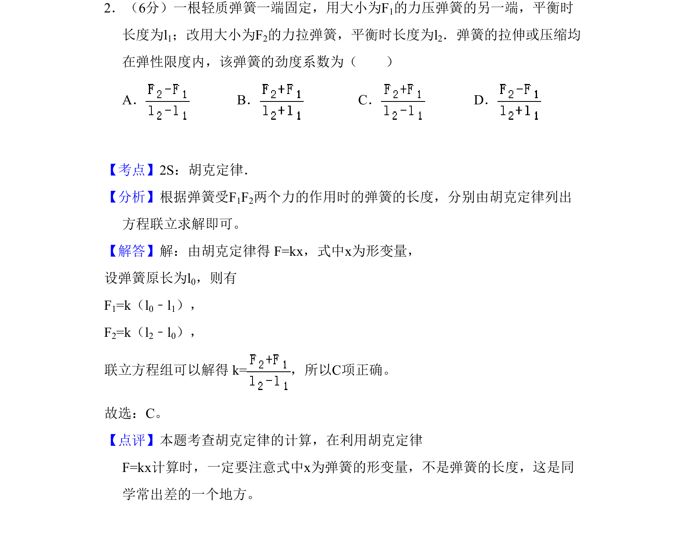
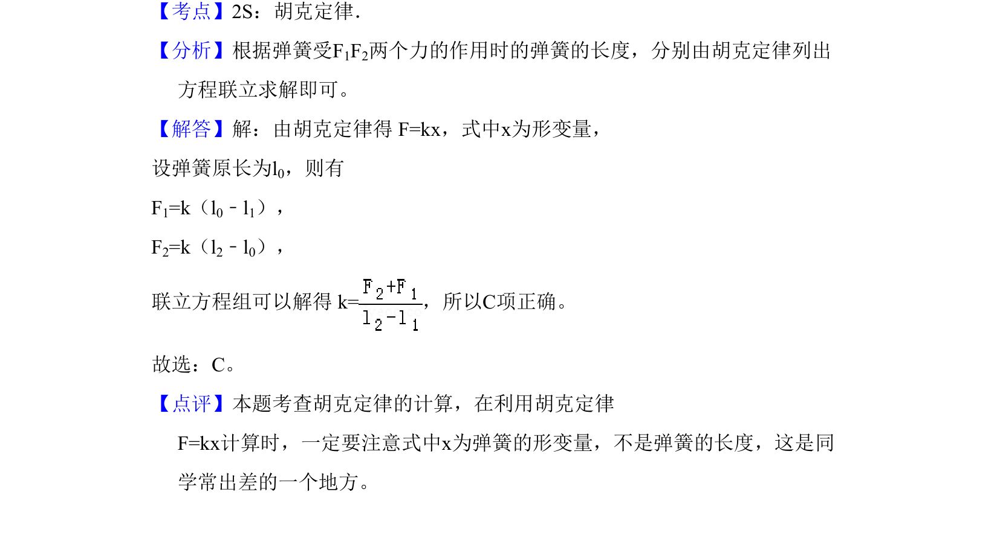

考点：胡克定律 弹力 形变量 劲度系数

弹簧劲度系数计算，考查胡克定律中弹力与形变量的关系

📄 原 PDF 第 2 页：
素材/真题/吉林/2008-2024·（吉林）物理高考真题/2010年高考物理试卷（新课标Ⅰ）（解析卷）.pdf
2．（6分）一根轻质弹簧一端固定，用大小为F1的力压弹簧的另一端，平衡时 长度为l1；改用大小为F2的力拉弹簧，平衡时长度为l2．弹簧的拉伸或压缩均 在弹性限度内，该弹簧的劲度系数为（ ） A．B．C．D．
【考点】2S：胡克定律．菁优网版权所有 【分析】根据弹簧受F1F2两个力的作用时的弹簧的长度，分别由胡克定律列出 方程联立求解即可。 【解答】解：由胡克定律得 F=kx，式中x为形变量， 设弹簧原长为l0，则有 F1=k（l0﹣l1）， F2=k（l2﹣l0）， 联立方程组可以解得 k=，所以C项正确。 故选：C。 【点评】本题考查胡克定律的计算，在利用胡克定律 F=kx计算时，一定要注意式中x为弹簧的形变量，不是弹簧的长度，这是同 学常出差的一个地方。